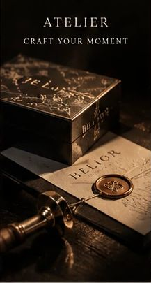

 Atelier
AtelierCraft Your Moment.
하나의 세계관이 손에 잡히는 사물이 되기까지의 과정입니다.
Process
제작의 순서
아틀리에 운영 방식과 제작 일정은 확정 후 안내합니다.
World
컬렉션의 동물과 키워드, 소재와 색을 정합니다.
Scent
세계관에 맞는 향의 방향을 잡습니다.
Object
향수와 가방, 의류와 오브제로 형태를 만듭니다.
Seal
엠블럼을 새기고 패키지로 마무리합니다.

Atelier하나의 세계관이 손에 잡히는 사물이 되기까지의 과정입니다.
아틀리에 운영 방식과 제작 일정은 확정 후 안내합니다.
컬렉션의 동물과 키워드, 소재와 색을 정합니다.
세계관에 맞는 향의 방향을 잡습니다.
향수와 가방, 의류와 오브제로 형태를 만듭니다.
엠블럼을 새기고 패키지로 마무리합니다.